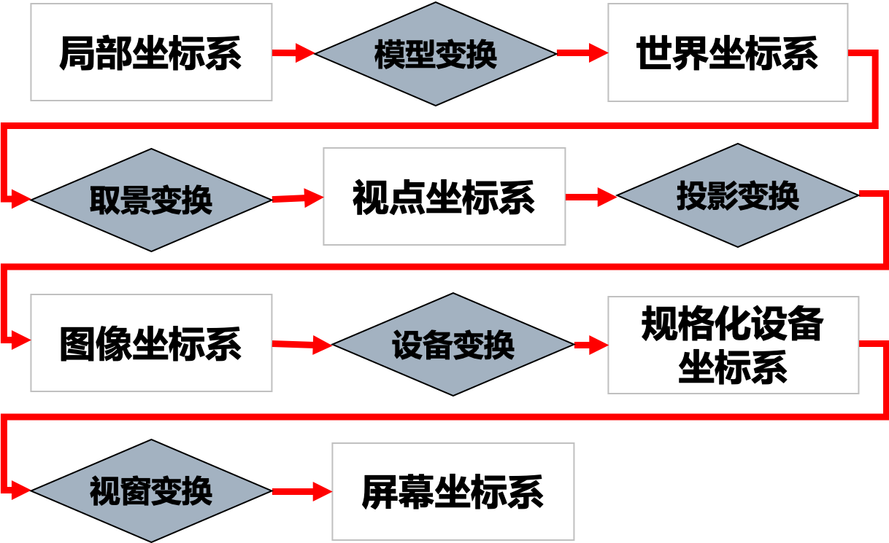

计算机图形学是一门研究如何利用计算机表示、生成、显示和处理图形的学科。
图形基础
| 区别 | 图形 | 图像 |
|---|---|---|
| 来源 | 由场景的几何模型和物理属性共同描述；多来源于主观世界，人为地由计算机产生，由数据描述而生成图形。 | 指计算机内以位图形式存在的亮度和颜色信息；多来源于客观世界，来自对实物的拍摄、剪取 |
| 处理 | 图形处理技术包括：几何变换、拟合、图形操作、图形模式产生、图形处理、隐藏线、面消除、浓淡处理、色彩纹理处理、图案生成 | 图像处理技术包括：图像几何修正（校正）、图像采集、存储、编码、滤波、增强、压缩、复原、重建、图形识别理解等 |
| 理论 | 多利用数学矩阵代数、计算几何、分形几何等 | 多利用二维数字信号滤波、各种信号正交变换等 |
| 应用 | CAD/CAM/CAE/CAI等。计算机艺术、计算机模拟、计算机动画、多媒体系统应用 | 应用于多媒体系统、医学、遥感遥测、工业控制、监测监视、天文气象、军事侦察等 |
颜色模型
设备无关的颜色模型：基于人眼对色彩感知的度量建立的数学模型，这些模型主要用于计算和测量。如CIE类颜色模型（CIE-Yxy、CIE-Lab、CIE-YUV）
设备相关的颜色模型：同一组模型色值在不同设备上解释时，得到的颜色可能并不相同。如RGB、CMY

| 基础 | RGB | CMY |
|---|---|---|
| 三原色 | R（红）G（绿）B（蓝） | C（青）M（品红）Y（黄） |
| 转换关系 | R+G=Y R+B=M G+B=C R+G+B=W | Y+M=R C+Y=G C+M=B C+M+Y=K |
| 实质 | 色光相加，光能量增大，明度增大形成白色 | 色料混合，光能量减小，明度减小，形成黑色 |
| 应用 | 彩色电影、电视，测色计 | 彩色绘画、摄影、印刷、印染 |
三维变换流程

建模坐标系：以物体自身为基点，对物体自身的形状和图形进行刻画的坐标系。物体的几何描述
世界坐标系：场景表现，定位物体在场景中的位置，物体的空间描述
视点坐标系：摄像机为原点、观察场景，确定物体展现（可见部分）
图像坐标系：将视点中的三维场景投影到一个二维平面形成图像
屏幕坐标系：二维图新经过标准化适配众多的屏幕尺寸
物体表示
在计算机中如何用数字表示并保存物体的几何信息
多边形表示
OBJ通用数据结构
一个物体是由一系列的平面片构成，这些平面片可能是三角形、四边形或n-边形。因此对一个物体3D模型的表示，由一下4部分构成：
- 顶点坐标表$v_i(x_i,y_i,z_i)$：每个顶点处可能有多个平面片，多个顶点汇聚又表示一个面。通常顶点数小于面片数
- 纹理坐标表${vt}_p(u_p,v_p)$：控制问了映射时纹理在表面上的位置。物体表面通过分割是一张二维平面
- 法向表${vn}_a(nx_a,ny_a,nz_a)$：控制物体绘制时的着色光滑程度。通常每个面片有自己独立的法向，但如果采用此法向，则会在的多边形表面棱角分明，因此通常用顶点周围的面片法向的平均代替顶点法向，则较光滑
- 面表$f_s(v_i,vt_p,vn_a)$：由指向顶点，纹理坐标以及法向的指针组成
优点：表示简单，拓扑任意，细节丰富，图形硬件加速
缺点：逼近表示，难以满足交互的放大，难以修改，几何属性计算困难，数据量庞大
边界表示
BREP(体、面、环、表、点)
物体的边界通常由面的并集表示，每个面又由它所在的曲面的定义加上其边界来表示，面的边界是边的并集，边又是由点表示。
边界表示法中，按照体-面-环-表-点的层次，记录构成形体的所有几何元素的几何信息及其链接的拓扑关系。
边界表示的数据结构有半边数据结构、翼边数据结构和辐射边数据结构。常用为半边数据结构
半边数据结构
可定向的二维流形及其子集
在半边数据结构中，将一条边计为两条相反方向的半边，边界上的每一条半边代表一个面，半边的起点表示顶点。
每一条半边有五个数据成员：起始顶点的指针，邻接面的指针（如果是边界，则为NULL），下一条半边（逆时针方向，相邻的半边），前一条半边
优点：查询和操作时间均为O(1)
缺点：只能表示可定向流形，对T-型结合，内部多边形不能使用，存在信息冗余